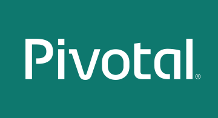
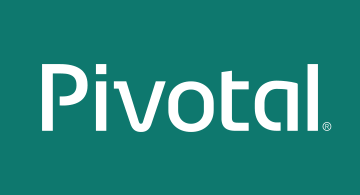

| Date |
Topic |
Description |
Presenter |
| 03/14/2017 |
Dingo Postgres Tile |
In a 90-minute session, Dr. Nic, CEO of Stark and Wayne, shares the motivation for creating and benefits of the Dingo Postgres tile.
|
Dr. Nic |
| 03/23/2017 |
Concourse Demo |
Daxter Mateo introduces Concourse and shows a demo of using Concourse to deploy an application to Cloud Foundry
|
Daxter Mateo |
| 03/28/2017 |
Pivotal Cloud Cache |
Pivotal Cloud Cache Overview
|
Prasad Radhakrishnan |
| 03/29/2017 |
Apigee Integration with PCF |
In an hour-long session, Prithpal Bhogil, sales engineer with Apigee discusses integrations of Apigee with PCF
|
Prithpal Bhogil |
| 04/26/2017 |
Volume Services with PCF |
Kartik Lunkad discusses Volume Services and demos it with a sample app
|
Kartik Lunkad |
| 05/09/2017 |
Managing the Complexity of Microservice Deployments |
To rapidly deliver microservices to production, organizations are turning to infrastructure automation provided by a cloud-native platform, like Cloud Foundry. With a platform in place, every microservice team will have what they need to create a CI/CD pipeline that safely delivers applications to a production environment. The final ingredient for success is knowing the right patterns for connecting microservices together over HTTP using REST APIs. In this webcast replay, Kenny Bastani from Pivotal and Prithpal Bhogill from Apigee dive into a reference architecture that demonstrates the patterns and practices for securely connecting microservices together using Apigee Edge integration for Pivotal Cloud Foundry. This session covers:basics for building cloud-native applications as microservices on Pivotal Cloud Foundry using Spring Boot and Spring Cloud Services patterns and practices that are enabling small autonomous microservice teams to provision backing services for their applications how to securely expose microservices over HTTP using Apigee Edge for PCF
|
Kenny Bastani and Prithpal Bhogil |
 
